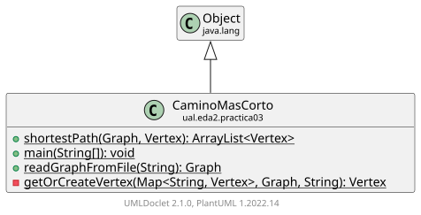

Class CaminoMasCorto
java.lang.Object
ual.eda2.practica03.CaminoMasCorto

La clase CaminoMasCorto proporciona métodos para encontrar el camino
más corto (en términos de peso total) en un grafo. Utiliza
la clase CaminosSimples para obtener todos los caminos simples (circuitos)
a partir de un vértice de origen y luego selecciona aquel de menor peso.
-
Constructor Summary
Constructors -
Method Summary
Modifier and TypeMethodDescriptionprivate static VertexMétodo auxiliar que obtiene un vértice existente o crea uno nuevo si es necesario.static voidMétodo principal para ejecutar el programa.static GraphreadGraphFromFile(String filePath) Lee un grafo desde un archivo de texto.shortestPath(Graph grafo, Vertex source) Obtiene el camino simple de menor peso a partir del vértice de origen en el grafo dado.
-
Constructor Details
-
CaminoMasCorto
public CaminoMasCorto()
-
-
Method Details
-
shortestPath
Obtiene el camino simple de menor peso a partir del vértice de origen en el grafo dado. Se recorre el conjunto de caminos simples obtenidos y se selecciona el camino con la menor suma de pesos.- Parameters:
grafo- Grafo en el cual se busca el camino.source- Vértice de origen desde el que se inician los caminos.- Returns:
- El ArrayList de vértices que representa el camino más corto.
-
main
Método principal para ejecutar el programa. Se carga un grafo desde un archivo de texto, se imprime un mensaje si el grafo se carga correctamente y se llama al método shortestPath para obtener e imprimir el camino más corto iniciando desde un vértice específico.- Parameters:
args- Argumentos de la línea de comandos (no se utilizan).
-
readGraphFromFile
Lee un grafo desde un archivo de texto. El archivo debe tener una línea por cada arista con tres elementos separados por espacios: el identificador del vértice origen, el identificador del vértice destino y el peso (distancia) de la arista.- Parameters:
filePath- Ruta del archivo de texto.- Returns:
- Un objeto Graph construido a partir de los datos del archivo.
- Throws:
IOException- Si ocurre un error de entrada/salida.
-
getOrCreateVertex
Método auxiliar que obtiene un vértice existente o crea uno nuevo si es necesario.- Parameters:
verticesMap- Mapa de identificadores de vértices a objetos Vertex.graph- Grafo en el cual se añaden los vértices.id- Identificador del vértice.- Returns:
- Un objeto Vertex correspondiente al identificador dado.
-